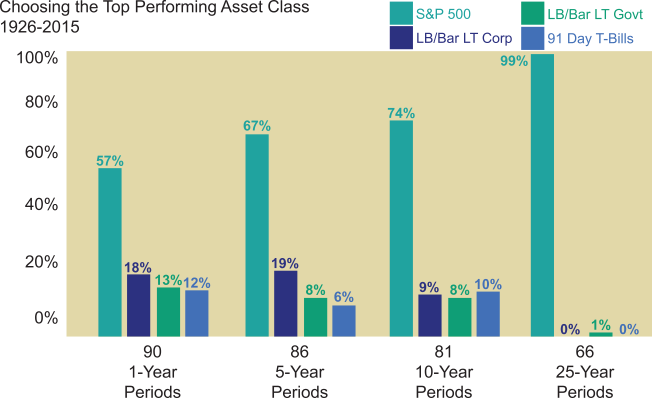

Taking a final look at the impact of time, the following chart depicts the percentage of times an asset class was the top performer in various time periods.
Observe that stocks outperformed bonds and money market instruments in 57% of the one-year periods. With longer periods, stocks outperformed other asset classes more frequently. For time periods of 25 years, there is only one instance of stocks being outperformed, and that was the 25 year period ending in 2008.
From these historical patterns, it is self-evident that the longer the time horizon of the investor, the greater the percentage of stocks a portfolio should contain.
